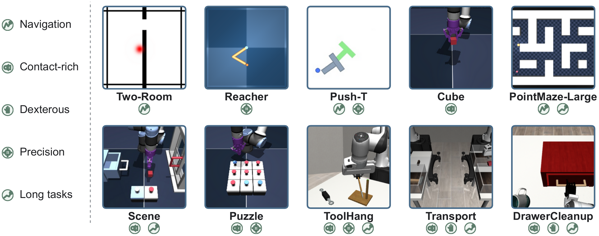
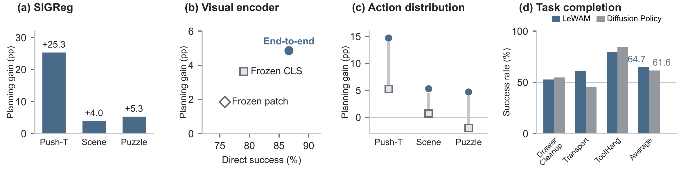

The common protocol specifies a goal image 25 steps later in the same trajectory and permits 50 executed actions.
Overview
Joint-embedding predictive architectures (JEPAs) learn latent world models without pixel reconstruction, but representation and dynamics learning are often separated from control. LeWAM trains them together through a joint prediction objective over future latent states and actions.
A shared predictor learns action-conditioned dynamics from clean actions and a stochastic policy through action flow matching. SIGReg constrains the latent distribution. The resulting model supports both direct policy execution and visual planning that evaluates sampled actions with learned dynamics.
Across ten simulated tasks, LeWAM reaches 85.5% versus 26.8% success on contact-rich tasks and 46.2% versus 10.9% at a 100-step goal offset. Planning runs 32.3× faster than LeWM (CEM) across four tasks. Behavior cloning is evaluated separately on three simulated tasks and three physical-robot tasks.
TL;DR: Learn representations, dynamics, and a stochastic policy together. Act directly, or sample candidate plans and refine their actions through the learned dynamics.
Joint Learning from Pixels
One encoder and a shared predictor. History, future, and goal images share an encoder. A mixture of transformers (MoT) uses separate state and action transformations with masked attention. In simulation, the encoder and predictor train jointly from scratch, with a 192-dimensional latent state.
Joint prediction plus SIGReg. Clean action chunks condition future-state prediction, supervised by latent mean squared error. Noisy actions learn a velocity field through flow matching. SIGReg regularizes the latent distribution while both prediction tasks shape the representation.
ℒLeWAM = ℒdyn + ℒact + λsig ℒSIGReg
Goal-independent dynamics. The state query reads history and clean actions. Action-flow queries read history and a causal noisy-action prefix. Goal and remaining-horizon conditioning enter only the action readout, keeping the dynamics independent of the requested goal.


Direct Control and Planning
Direct control. Integrating the learned action velocity field from Gaussian noise generates a 2K-action chunk. The controller executes its first K actions, observes the environment again, and repeats.
Planning has two stages, with the model frozen:
- Sample structured plans. Generate a population of N candidates by alternating stochastic action generation with latent dynamics rollouts. Each candidate extends its imagined history toward the goal.
- Refine and select. Optimize every candidate through the frozen differentiable dynamics using terminal latent goal error. A proximity penalty discourages large deviations from sampled actions; select the lowest-cost iterate across all candidates.
C(a) = MSE(ẑt+L(a), zg)
In receding-horizon execution, run the first K actions and repeat both planning stages from the new observation.

Simulation Experiments
The ten-task simulation suite spans navigation, planar control, articulated manipulation, bimanual coordination, dexterity, and contact-rich dynamics. It includes four LeWM environments and six additional settings.

Current manuscript overview

Short-horizon goal reaching

Increasing the goal horizon
The horizon study evaluates goals 25, 50, 75, and 100 steps ahead in Push-T, Cube, Scene, and Puzzle. See the paper for the task-specific protocols.

Goal-free task completion
Behavior cloning evaluates direct control from observation history, with no goal image or remaining-horizon input. These results are separate from goal-reaching planning.
| Method | DrawerCleanup | Transport | ToolHang | Average |
|---|---|---|---|---|
| Diffusion Policy | 54.7 ± 1.2 | 45.3 ± 9.0 | 84.7 ± 3.1 | 61.6 |
| LeWAM | 52.7 ± 5.0 | 61.3 ± 9.9 | 80.0 ± 3.5 | 64.7 |
Each method uses the observation setup specified in the paper. The averages summarize three goal-free behavior-cloning tasks and are separate from goal-reaching planning.
Representations and Stochastic Actions
Physical-state probing and SIGReg
Linear probes on Push-T test whether the latent state preserves object, proprioceptive, and action information. The SIGReg ablation also measures the representation's effective rank and its effect on planning.
| Model | SIGReg | Effective rank | Object R² | Proprio R² | Action R² (IDM) |
|---|---|---|---|---|---|
| LeWAM | Yes | 42.90 | 0.90 | 0.86 | 0.40 (0.75) |
| LeWAM | No | 8.20 | 0.69 | 0.86 | 0.38 (0.73) |
| LeWM | Yes | 94.2 | 0.95 | 0.80 | 0.29 (0.71) |
Action (IDM) uses either the current latent state or a pair of current and future states, respectively. These probes describe decodability, rather than control success.

Qualitative action distributions
In two-door navigation, demonstrations use both passages. The MSE action head concentrates on the lower passage and produces collisions in the displayed examples, while the flow-matching head samples both routes.


Qualitative examples. The same visual task allows two routes; the stochastic action head samples both in these examples.
Physical-Robot Control
The physical study evaluates Pick and Place T, Push-T, and Tape Stack. It compares an end-to-end LeWAM model and a variant built on a frozen V-JEPA 2.1 backbone with Diffusion Policy and π0.5.
The policy uses a scene camera and a wrist camera. A seven-DoF robot sends observations to a remote inference machine, receives action chunks, and executes joint targets at 30 Hz. Each method is evaluated in 30 trials per task.

| Method | Pick and Place T | Push-T | Tape Stack | Average | GFLOPs |
|---|---|---|---|---|---|
| Diffusion Policy | 19 / 30 | 16 / 30 | 0 / 30 | 38.9% | 270.0 |
| π0.5 | 14 / 30 | 3 / 30 | 9 / 30 | 28.9% | 3603.6 |
| LeWAM, frozen V-JEPA 2.1 | 15 / 30 | 12 / 30 | 5 / 30 | 35.6% | 270.2 |
| LeWAM, end-to-end | 16 / 30 | 8 / 30 | 6 / 30 | 33.3% | 270.2 |
GFLOPs count one full action-chunk inference, including denoising steps. LeWAM uses 13.3× fewer operations per action chunk than π0.5; this is a compute comparison, not a measured end-to-end latency ratio.